Integrantes do Projeto Integrador:
Alex Carlos,
Alexandre Silva,
Lúcio de Souza Torres,
Winder Rezende
A Contabilidade Gerencial congrega todos os demais instrumentos de contabilidade que complementam a Contabilidade Financeira para tornar efetiva a informação contábil dentro das empresas em todo o processo de gestão.
As necessidades dos gestores das empresas, de informações contábeis para o processo de planejamento, execução e controle de suas atividades e para avaliação de desempenho, são supridas pelos diversos instrumentos de Contabilidade Gerencial por meio do sistema de informação contábil gerencial.
O software foi desenvolvido conforme proposto pela disciplina de Contabilidade Gerencial e tem como finalidade é fazer o controle de patrimonial de empresas ligadas a escritórios de contabilidade, onde cada usuário poderá conectar ao sistema através de login e senha e fazer o controle de várias empresas e seus patrimônios. As funcionalidades do software consistem em efetuar o cadastro de empresas e seus patrimônios e gerencia-los, podendo fazer baixa do patrimônio, visualizar sua data de aquisição, valor de aquisição, depreciação acumulada, valor contábil e ganho ou perda de acordo com valor de venda do patrimônio ou total depreciação do mesmo, o software também dá suporte a emissão de relatórios no formato de planilhas eletrônicas (Excel/CSV), PDF, e HTML. Abaixo será demostrado através telas capturas do software demonstrando seu funcionamento.
Tela de Login do Sistema
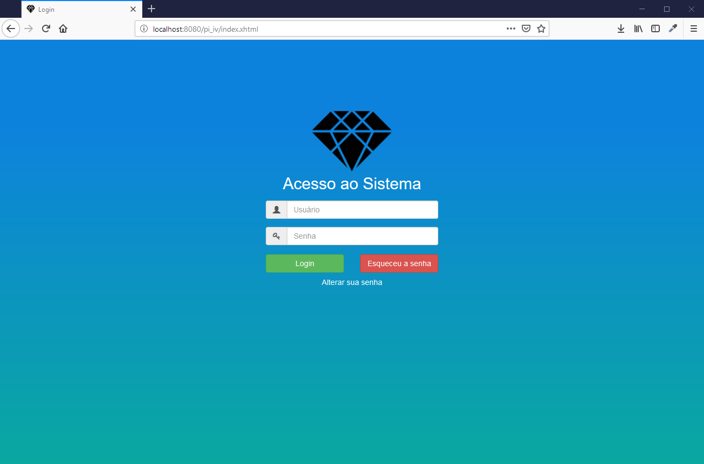Tela inicial
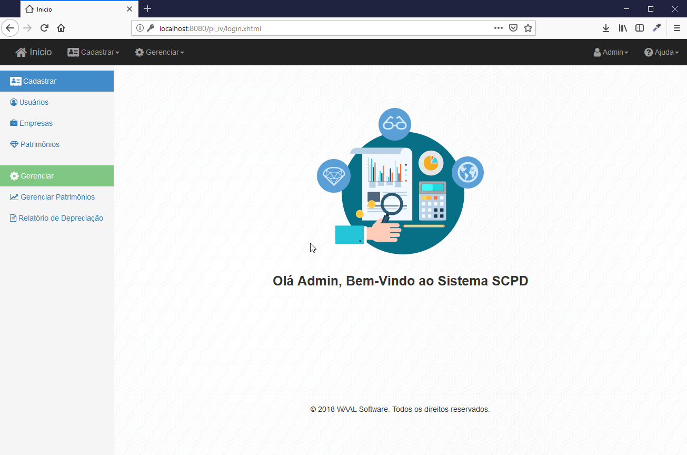Tela de cadastro de usuários: Nesta tela o administrador do sistema cria os usuários que usarão o sistema
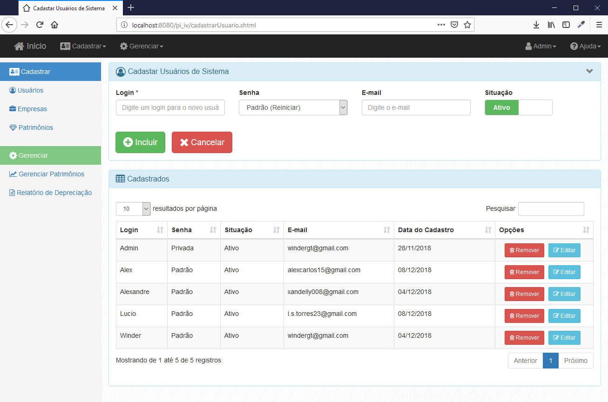Tela de cadastro de empresas: Nesta tela o usuário do sistema poderá cadastrar todas as empresas vinculadas a sua contabilidade.
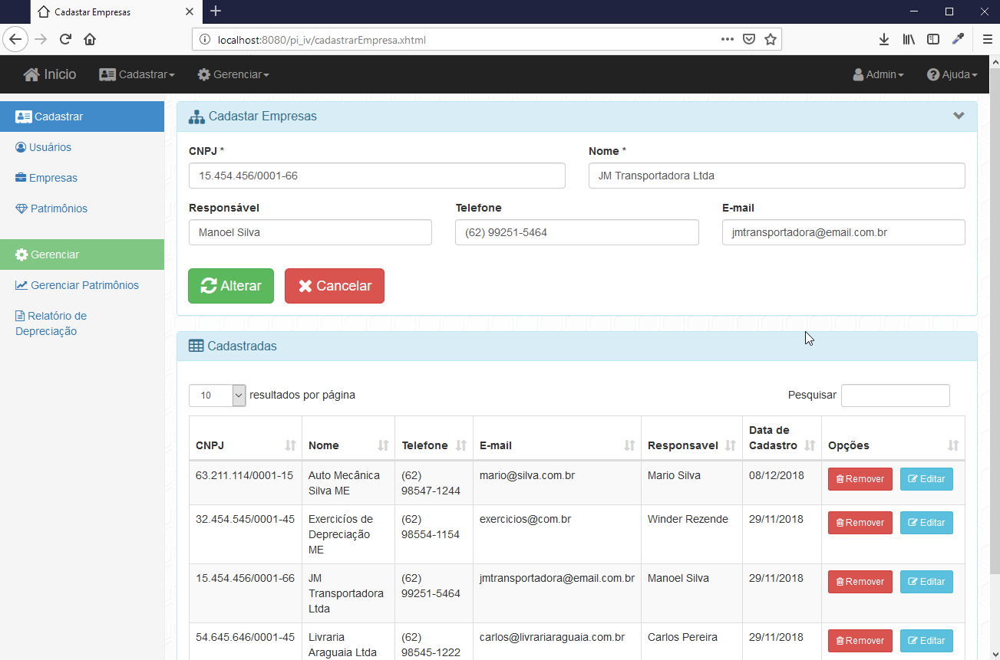Tela de cadastro de patrimônio: O usuário poderá cadastrar todos os patrimônios ligados a uma empresa.
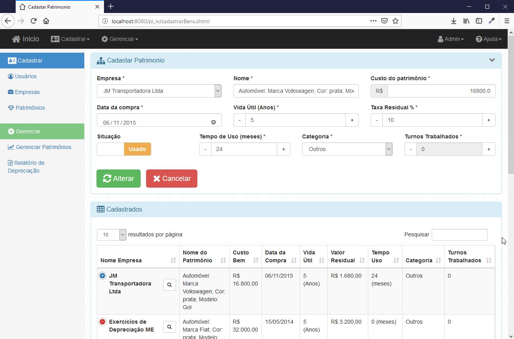Tela de gerenciamento de patrimônio: O usuário pode verificar estado de depreciação e baixar os patrimônios.
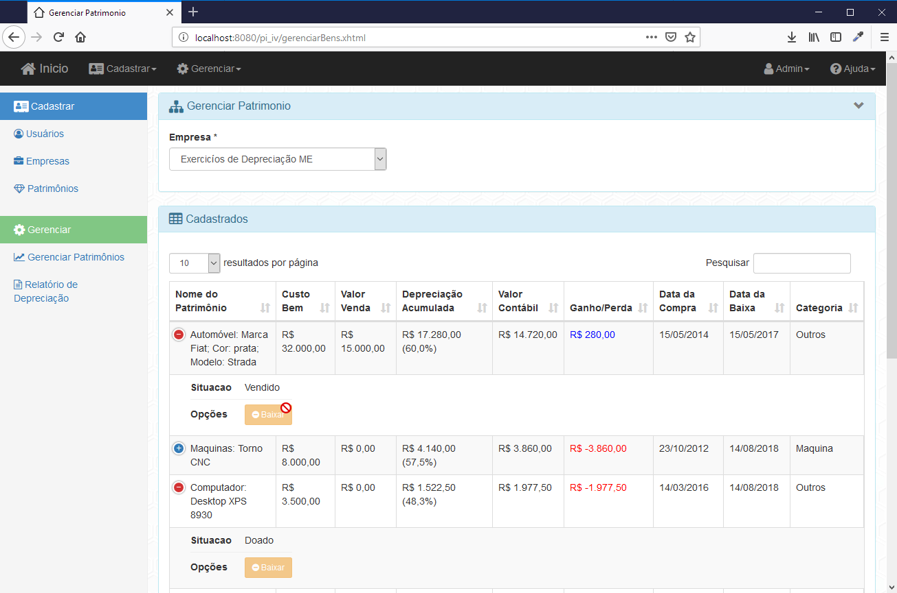Tela de baixa de patrimônio: Assim que for informado a situação o valor de venda caso seja vendido e a data o cálculo de depreciação será feito.
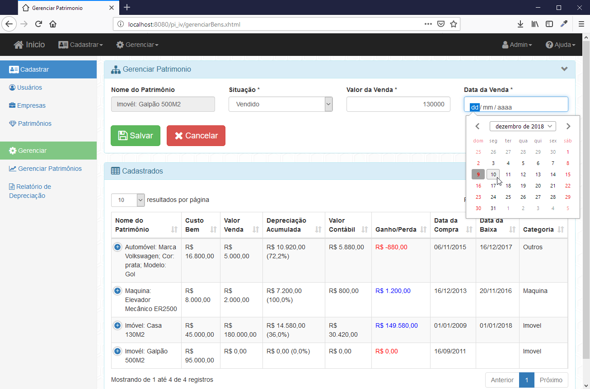Tela de Relatórios: Caso o bem não tenha sido baixado o cálculo de depreciação é feito com a data atual, o usuário poderá emitir relatórios nos formatos de planilha eletrônica (Excel/CSV), Impressão HTML, e PDF.
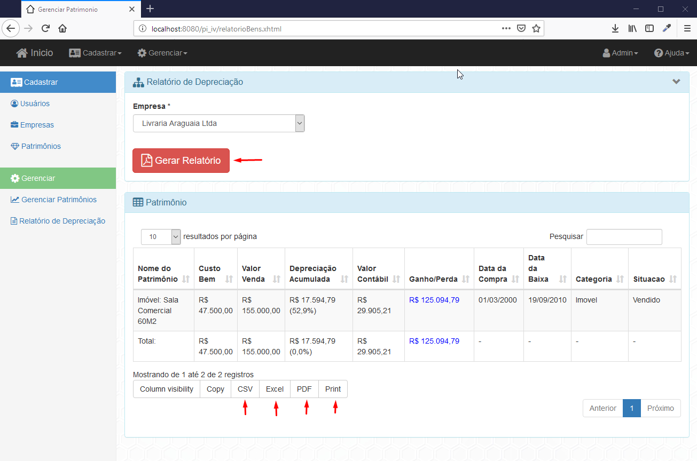Relatório no formato Excel (xlsx)
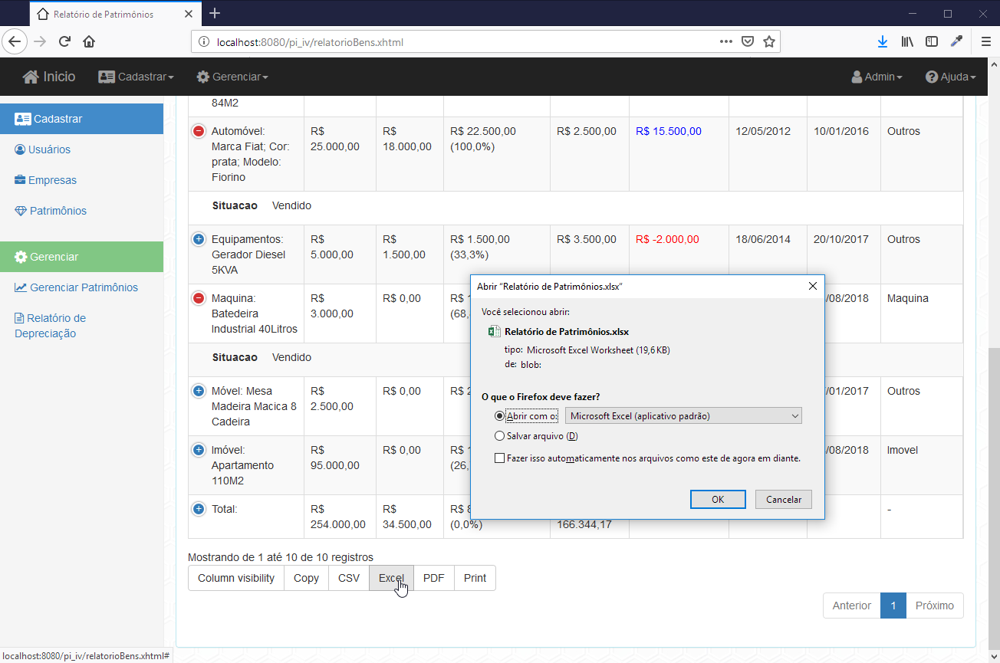Relatório no formato HTML
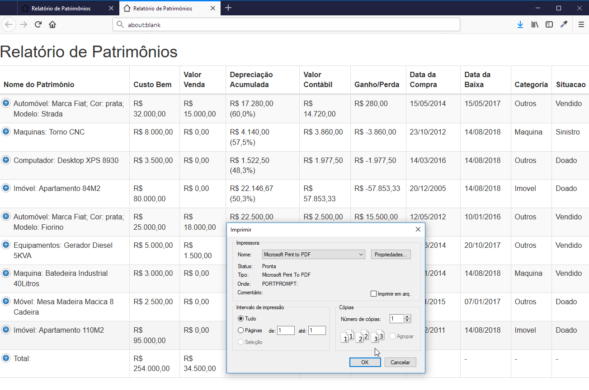Relatório no formato PDF
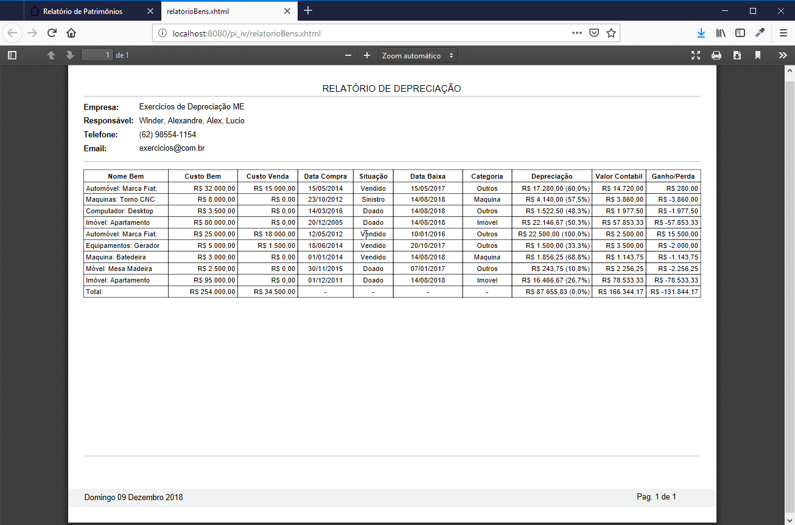Sobre o Software
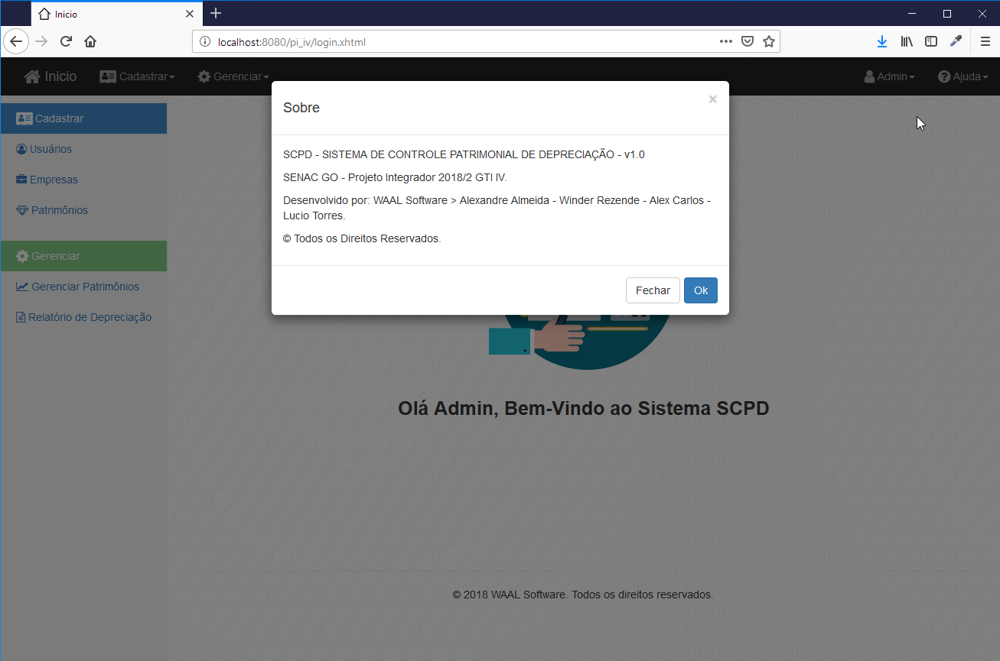